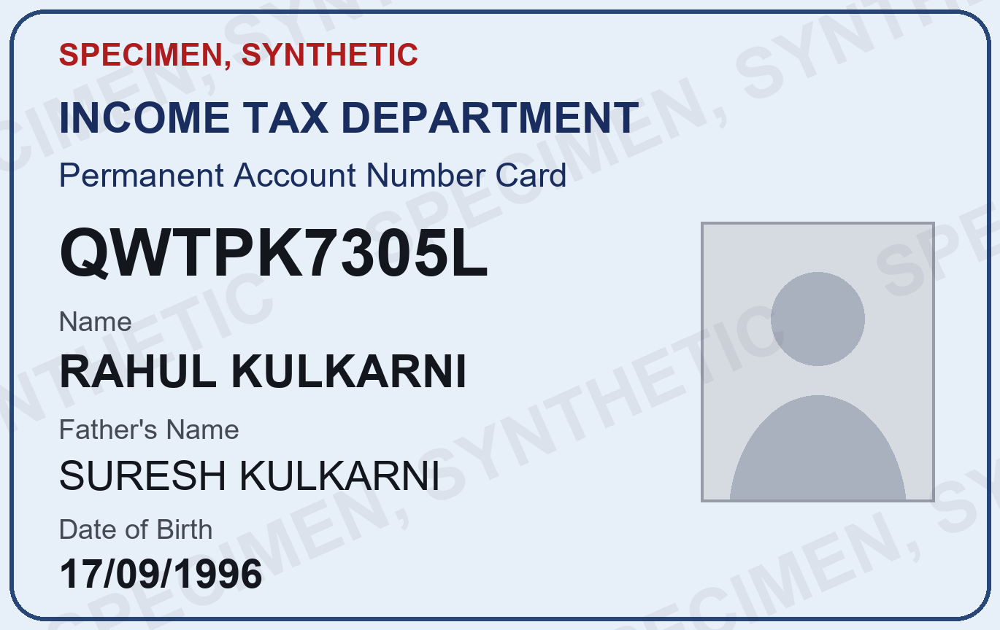
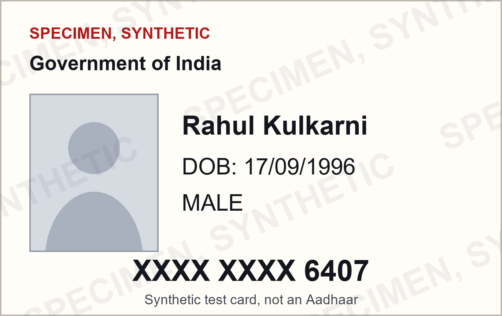
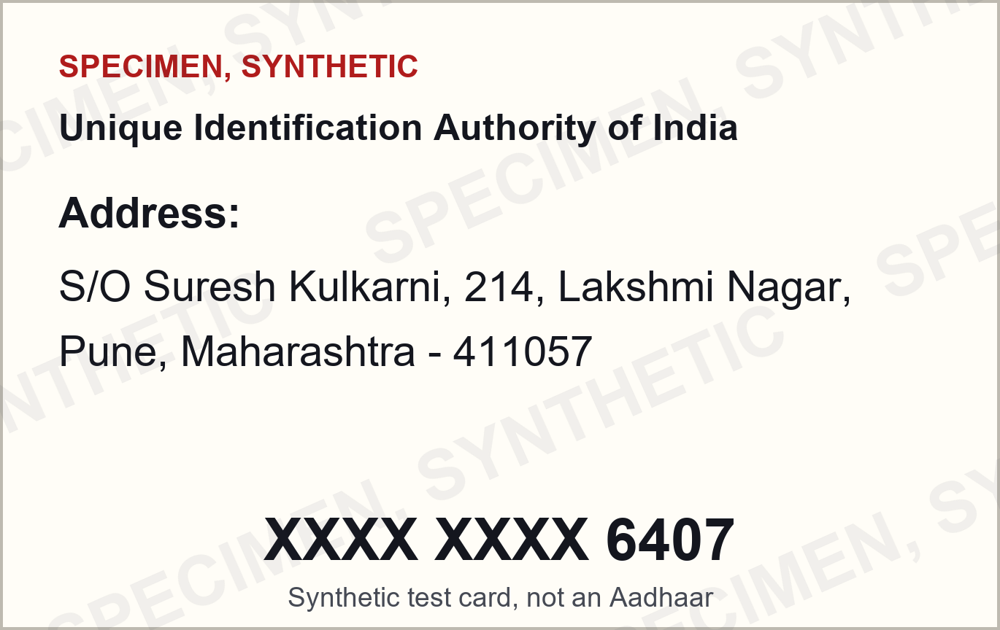
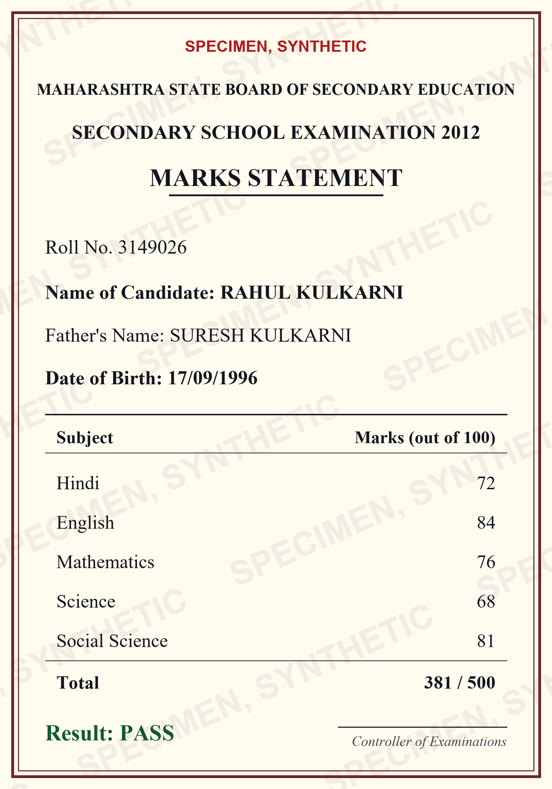
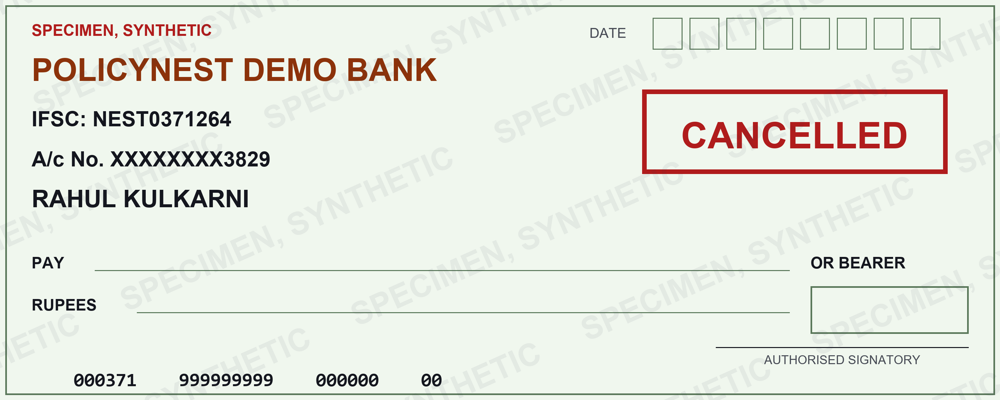

PolicyNest usability test: Rahul Kulkarni's documents (SPECIMEN, SYNTHETIC)
Invented person, invented numbers. Not real documents. Print on A4 at 100% / Actual size (turn off "Fit to page"). Cut along the dashed lines, then photograph each paper with the phone camera and upload it in the matching slot.
1. PAN card (85.6 x 54 mm)

2. Aadhaar, front (masked, last four digits only)

3. Aadhaar, back (masked)

4. Class 10 marksheet

Photographing tips- Daylight, paper flat on a table, phone parallel above it.
- All four corners in the frame, no glare, no finger on the paper.
- Upload each photo in its own slot. The selfie is not here: see the README.
5. Cancelled cheque (190 x 76 mm)
